한 번에 하나씩 익히는 교사용 올인원 5분 연수 시리즈 (총 7편)
컴퓨터가 익숙하지 않은 선생님도 부담 없이 하루에 한 편(4~5분)씩 보고 그대로 따라 하실 수 있도록 구성한 실제 작동 스크린샷 스토리보드와 구어체 내레이션 대본입니다. 각 장면의 [대본 복사] 버튼을 눌러 영상 촬영이나 연수 유인물에 바로 활용하세요.
엑셀 수식 몰라도 끝! 구글 시트 1개로 교무수첩·생기부·진학상담 연결하기
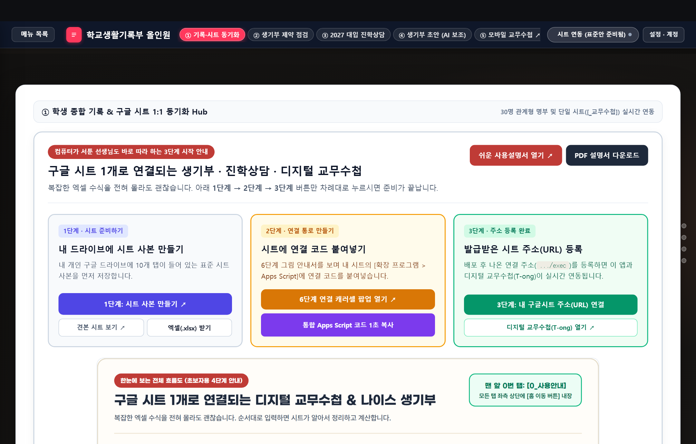
"선생님 여러분, 안녕하세요! 학기 중 수업 관찰 메모부터 학기 말 나이스 생기부 세특·행특 작성, 그리고 2027 대입 상담까지 따로따로 관리하느라 힘드셨죠? 이 프로그램은 컴퓨터가 서툰 선생님도 단 3단계 버튼만 누르면 내 구글 시트 하나에 모든 기록이 자동으로 모이도록 설계되어 있습니다. 먼저 상단 첫 번째 탭인 [기록·시트 동기화] 화면에서 파란색 [1단계: 시트 사본 만들기] 버튼을 눌러 내 구글 드라이브에 표준 시트를 복사해 주세요. 만약 학교 계정 권한 문구가 뜨면 바로 아래 [엑셀 받기]를 눌러 구글 드라이브에 올리셔도 100% 똑같이 작동합니다."
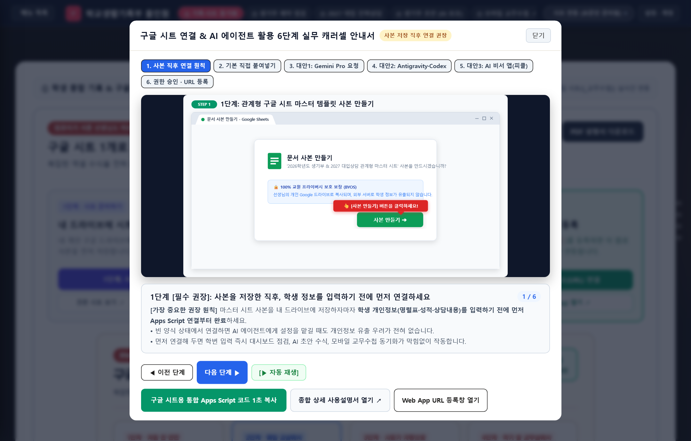
"시트 사본을 만드셨다면, 학생 이름을 입력하기 전에 먼저 2단계 주황색 카드의 [6단계 연결 캐러셀 팝업 열기] 버튼을 눌러 주세요. 보시는 것처럼 1번부터 6번까지 큰 그림으로 어디를 눌러야 하는지 하나씩 보여 드립니다. 아래 초록색 [구글 시트용 통합 Apps Script 코드 1초 복사] 버튼을 누른 뒤, 내 구글 시트 상단 메뉴의 [확장 프로그램 - Apps Script]에 그대로 붙여넣고 [새 배포]를 눌러 주시면 됩니다."
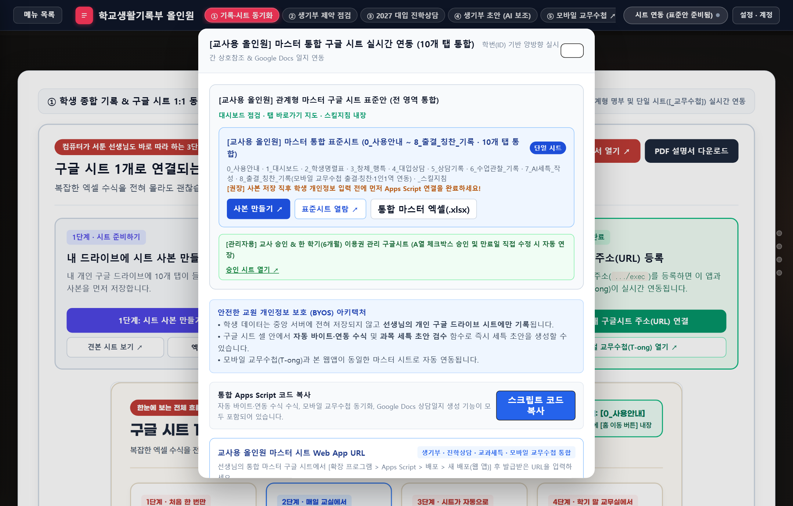
"마지막 3단계입니다! 초록색 [내 구글시트 주소 연결] 버튼을 누르면 이렇게 주소 입력창이 열립니다. 방금 구글 시트에서 복사한 웹앱 주소를 붙여넣고 저장을 누르면 끝입니다. 이제부터 선생님이 교실에서 스마트폰으로 적는 기록과 컴퓨터에서 다듬는 생기부 초안이 내 개인 구글 시트 10개 탭에 실시간으로 자동 저장됩니다."
교실에서 스마트폰·태블릿으로 좌석 클릭 한 번에 수업관찰 누가기록 남기기
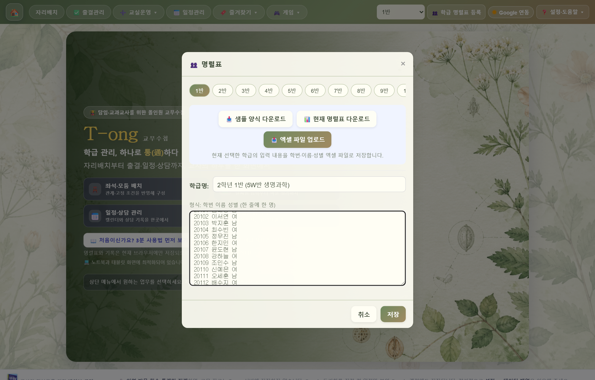
"이번 영상에서는 교실에서 매일 쓰시는 디지털 교무수첩 T-ong 활용법을 알아봅니다. 우측 상단 [학급 명렬표 등록] 버튼을 누르면 학번과 이름을 한 번에 붙여넣거나 엑셀 파일로 올릴 수 있습니다. 특히 2026 고교학점제 이동수업처럼 1반부터 10반 학생이 섞여 있는 5W반, 8V반 수업도 학번 그대로 등록해 분반별로 관리할 수 있습니다."
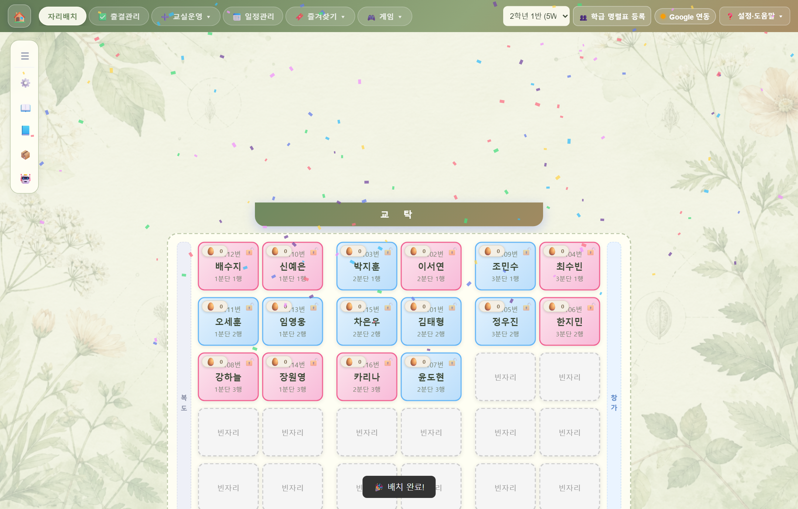
"명렬표를 저장한 뒤 [추첨 시작]을 누르면 남녀 짝 배치나 앞자리 고정 조건을 반영해 1초 만에 새로운 좌석표가 완성됩니다. 수업 중에는 오른쪽의 [교탁 시점] 버튼을 눌러 보세요. 선생님이 교탁에서 바라보는 방향 그대로 학생 자리가 뒤집혀서, 누가 어디 앉았는지 한눈에 보입니다."
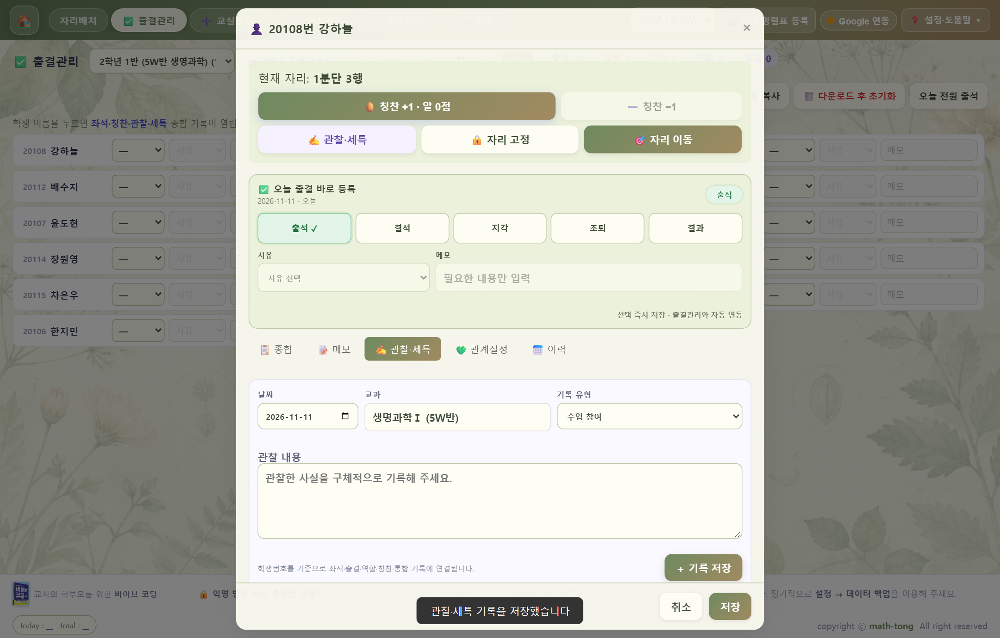
"수업하다가 학생이 좋은 질문을 하거나 실험을 주도적으로 이끌었을 때, 포스트잇에 적지 마시고 화면에서 그 학생의 자리를 바로 터치해 보세요. 학생 종합 창이 열리면 가운데 [관찰·세특] 탭을 누르고 오늘 관찰한 활동 사실을 한두 줄 적어 [기록 저장]을 누릅니다. 이렇게 쌓인 메모가 학기 말 세특의 가장 확실한 원재료가 됩니다."
아침 조회 출결 체크와 칭찬 포인트가 행특 기초자료로 자동 집계되는 과정
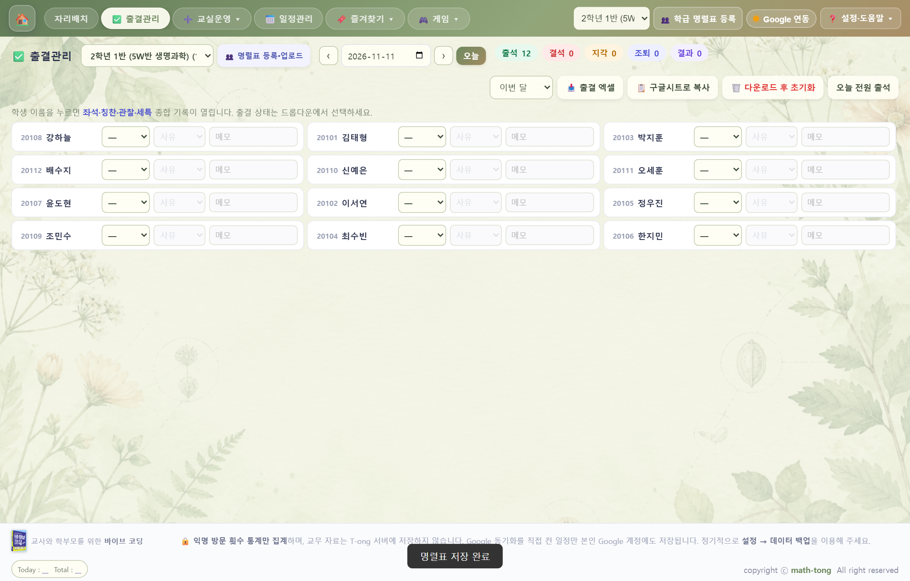
"세 번째 시간은 아침 조회 1분 만에 끝내는 출결 및 학급 운영 기록입니다. 상단 [출결관리] 탭을 누르면 오늘 날짜의 학생 명단이 나타납니다. 특이사항이 있는 학생만 결석이나 지각, 사유를 선택해 주시면 됩니다. 여기서 학생 이름을 눌러도 방금 보신 칭찬 포인트와 관찰 기록 창이 바로 열립니다."
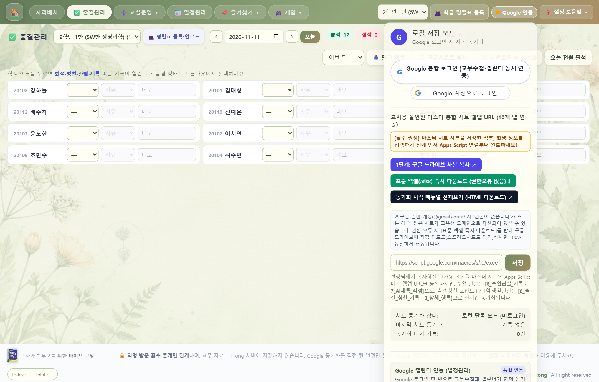
"교실에서 기록을 마치셨다면 우측 상단 [Google 연동] 버튼을 눌러 보세요. [시트로 지금 전송]을 누르면 오늘 체크한 출결과 칭찬 포인트는 구글 시트 8번 탭으로, 수업 관찰 메모는 6번 탭으로 즉시 날아갑니다. 반대로 컴퓨터 시트에서 수정한 명렬표나 기록을 태블릿으로 가져오고 싶을 땐 옆의 초록색 [시트에서 명렬·기록 불러오기] 버튼만 누르면 양방향으로 똑같이 맞춰집니다."
누적된 관찰 메모를 불러와 2026 기재요령 맞춤 세특·행특 문단 완성하기
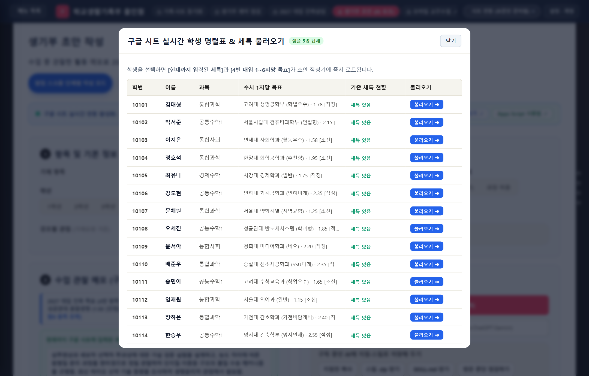
"이제 학기 말 생기부 작성 시즌입니다! 상단 네 번째 메뉴인 [생기부 초안 AI 보조]로 들어오셔서, 연두색 연동 바 오른쪽의 [학생 선택·불러오기] 버튼을 눌러 보세요. 구글 시트에 저장된 우리 반 학생들이 표로 나타나고, 학생마다 현재 몇 바이트가 적혀 있는지, 희망 대학과 학과는 어디인지 한눈에 보입니다. 작성할 학생의 [불러오기]를 눌러 줍니다."
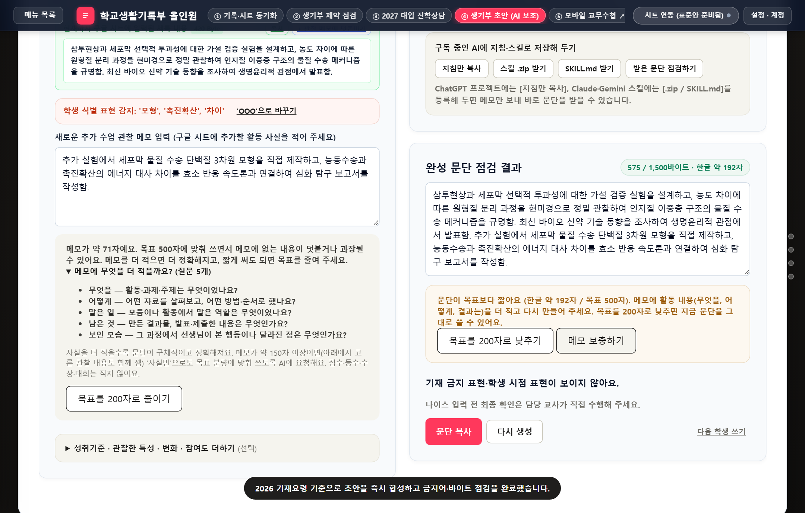
"왼쪽 화면에는 시트에서 불러온 기존 세특 내용과 학생의 진학 목표가 자동으로 표시됩니다. 그 아래에 새롭게 추가할 관찰 메모를 적고 오른쪽 [초안 바로 생성하기] 버튼을 누르면, 기존 내용과 새 메모가 자연스럽게 이어진 명사형 종결어미 문단이 즉시 만들어집니다. 만약 메모에 학생 이름이나 식별 단어가 있으면 'OOO'으로 바꾸는 버튼이 자동으로 뜨고, 완성된 문단의 나이스 바이트 수와 금지어 여부가 그 자리에서 검증됩니다."
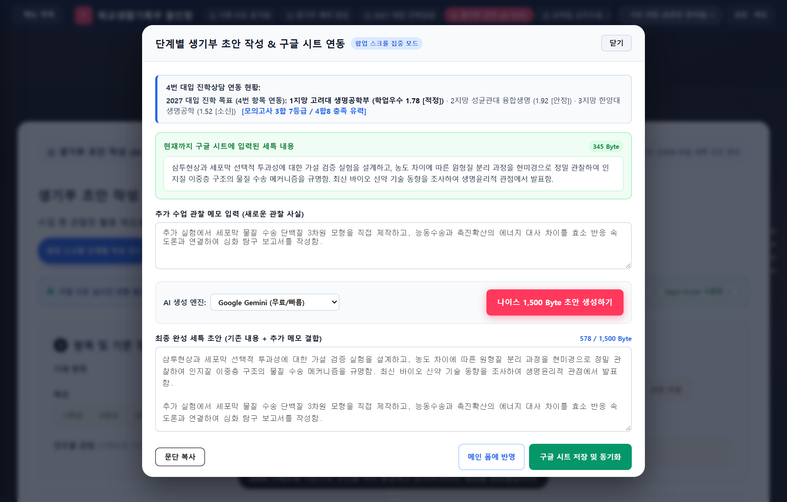
"화면의 여러 옵션을 보지 않고 오직 글쓰기에만 집중하고 싶으실 때는 좌측 상단의 파란색 [팝업 스크롤 단계별 작성 모드] 버튼을 눌러 보세요. 큰 팝업 창 하나 안에서 진학 목표 확인, 기존 세특 확인, 추가 메모 입력, 초안 생성, 그리고 마지막 초록색 [구글 시트 저장 및 동기화] 버튼까지 위에서 아래로 스크롤하며 1분 만에 한 학생을 깔끔하게 마무리할 수 있습니다."
Gemini 젬스·ChatGPT·Claude 스킬 등록 안내 그림과 탐구보고서 30장 일괄 표 변환
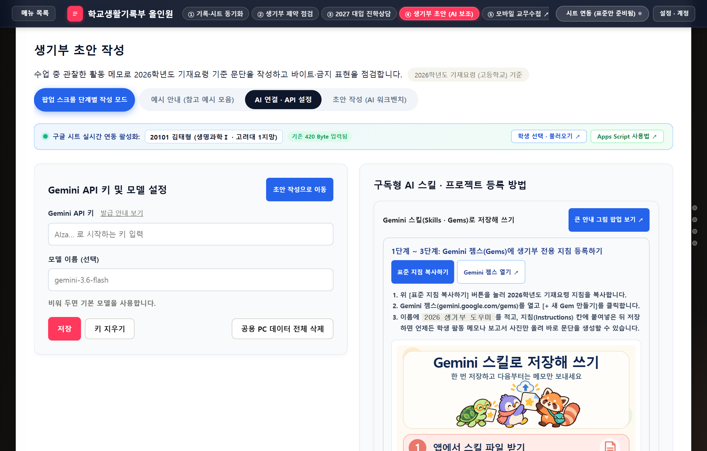
"다섯 번째 시간에는 선생님들이 평소 구독해서 쓰시는 Gemini, ChatGPT, Claude에 우리 앱의 2026 기재요령 규칙을 통째로 심어 두는 방법을 알려 드립니다. [AI 연결·API 설정] 탭을 누르시면 오른쪽 카드에 단계별 설명과 함께 귀여운 일러스트 안내 그림이 바로 나타납니다. 파란색 [표준 지침 복사하기]나 [SKILL.md 내려받기]만 누르면 준비가 끝납니다."
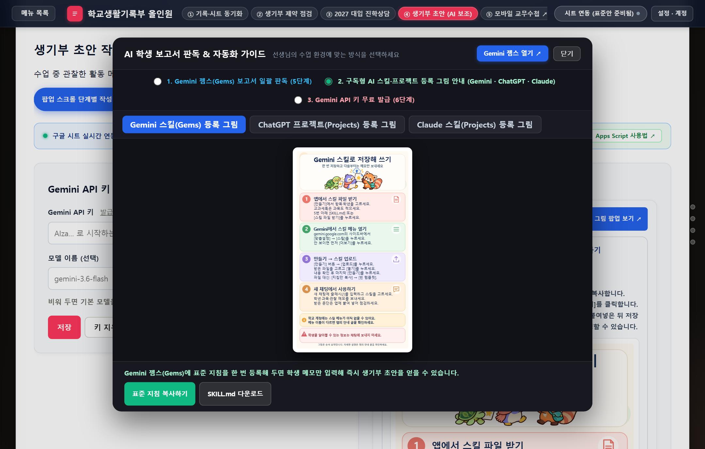
"그림을 더 크게 보고 싶으실 때는 [큰 안내 그림 팝업 보기] 버튼을 눌러 보세요. 이렇게 큰 화면으로 Gemini, ChatGPT, Claude 각각의 어디를 눌러 지침을 업로드하는지 선명하게 확인하실 수 있고, 팝업 아래쪽에서도 바로 표준 지침을 복사할 수 있습니다."
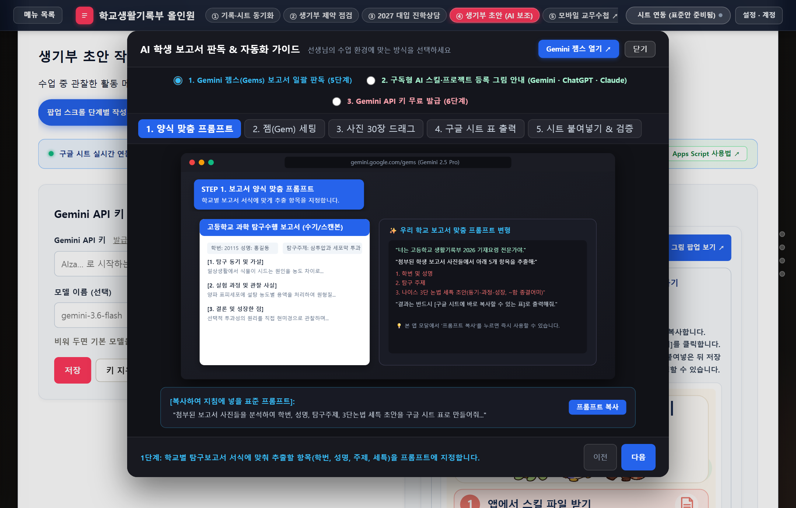
"특히 수행평가 시즌에 학생들이 제출한 손글씨 탐구보고서 30장을 언제 다 읽고 타이핑할지 막막하셨죠? 팝업 첫 번째 메뉴인 [Gemini 젬스 보고서 일괄 판독] 탭을 누르고 [프롬프트 복사]를 눌러 젬스에 넣어 두세요. 그다음 학생 보고서 사진 30장을 마우스로 한 번에 끌어다 놓으면, 학번·성명·탐구주제·3단 논법 세특 초안이 구글 시트에 바로 붙여넣을 수 있는 표로 일괄 출력됩니다."
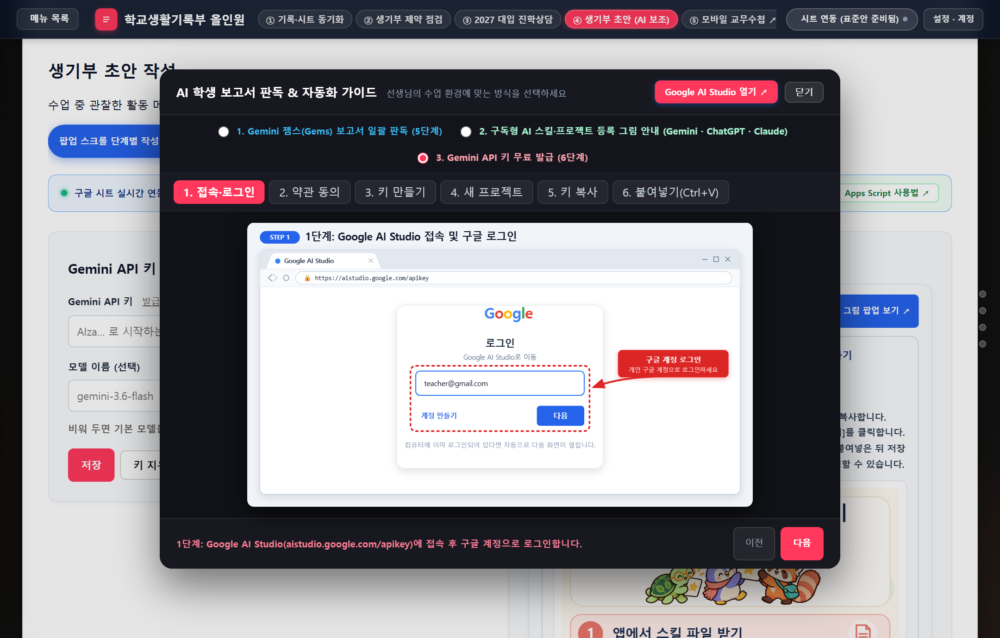
"만약 외부 AI 창을 열지 않고 이 웹앱 안에서 바로 생성 버튼을 쓰고 싶으시다면, 세 번째 메뉴인 [Gemini API 키 무료 발급 6단계] 그림을 따라 1분 만에 무료 키를 발급받아 저장해 두시면 됩니다."
나이스 엑셀·PDF 올리기 전에 KMO·토익·소논문·부모 지위·바이트 초과 3초 만에 잡기
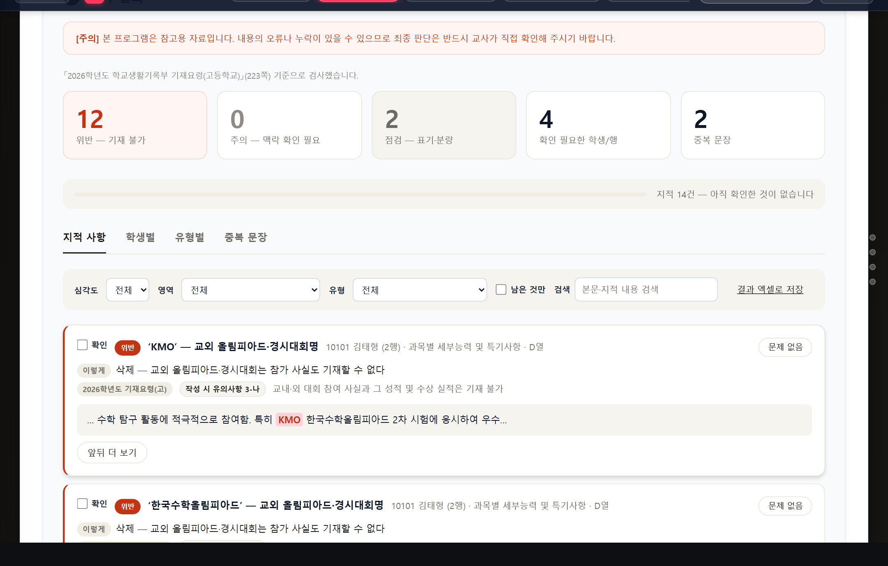
"여섯 번째 영상은 학기 말 선생님들의 가장 든든한 안전망인 [생기부 제약 점검] 기능입니다. 상단 두 번째 탭을 누르고 나이스에서 내려받은 엑셀이나 PDF 파일을 올려 보세요. 연습해 보시려면 [샘플 데이터로 즉시 체험하기] 버튼을 누르시면 됩니다. 보시는 것처럼 KMO, 한국수학올림피아드 같은 교외 경시대회명, 토익 같은 공인어학성적, 소논문, 부모님 직업 암시 표현까지 2026학년도 기재요령 몇 쪽 몇 항 위반인지 정확히 짚어 주고 어떻게 고쳐야 하는지 바로 안내해 줍니다. 학급 내 다른 학생과 똑같은 문장이 들어간 '중복 문장'까지 잡아내니 마감 전에 꼭 한 번 돌려 보세요!"
전국 133개 대학 수시 입결 검색부터 9등급↔5등급 변환, 수시 6장 포트폴리오까지
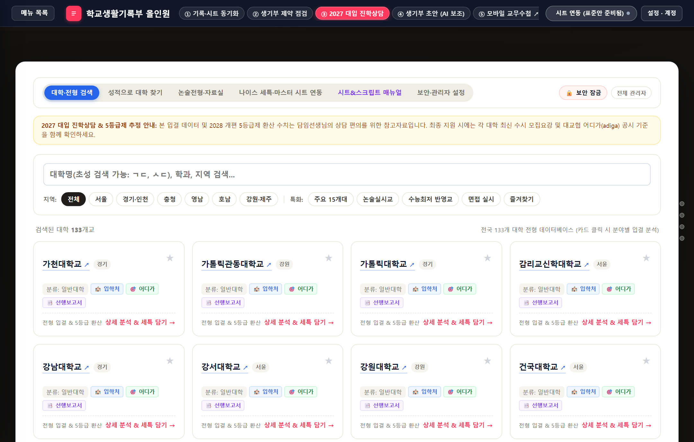
"마지막 일곱 번째 영상은 학부모·학생 상담 시간을 절반으로 줄여 주는 [2027 대입 진학상담]입니다. 상단 세 번째 탭을 누르면 전국 133개 대학의 입학처, 어디가 입결, 논술 기출 및 선행학습 영향평가 보고서가 한 화면에 정리되어 있습니다. 검색창에 초성만 쳐도 바로 대학을 찾을 수 있고, [성적으로 대학 찾기] 탭에 학생의 내신 등급을 넣으면 2027 현행 9등급제 입결은 물론 2028 개편 5등급제 추정치까지 동시에 비교해 줍니다. 여기서 고른 수시 6장 목표 대학은 구글 시트 4번 탭과 앞서 보신 생기부 초안 작성 화면 상단에 자동으로 연결되어, 목표 학과에 꼭 맞는 맞춤형 세특을 작성할 수 있게 도와줍니다."